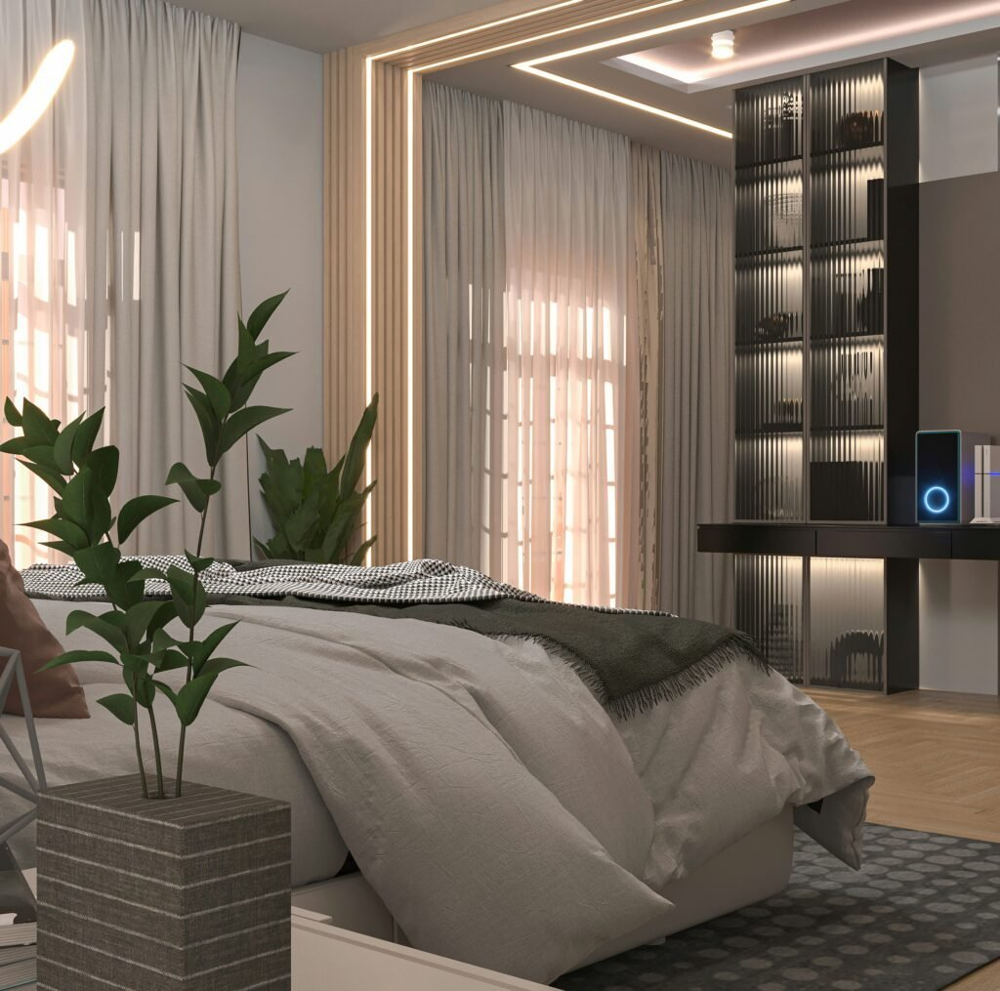
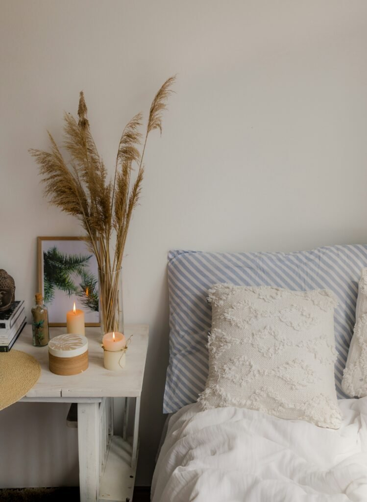
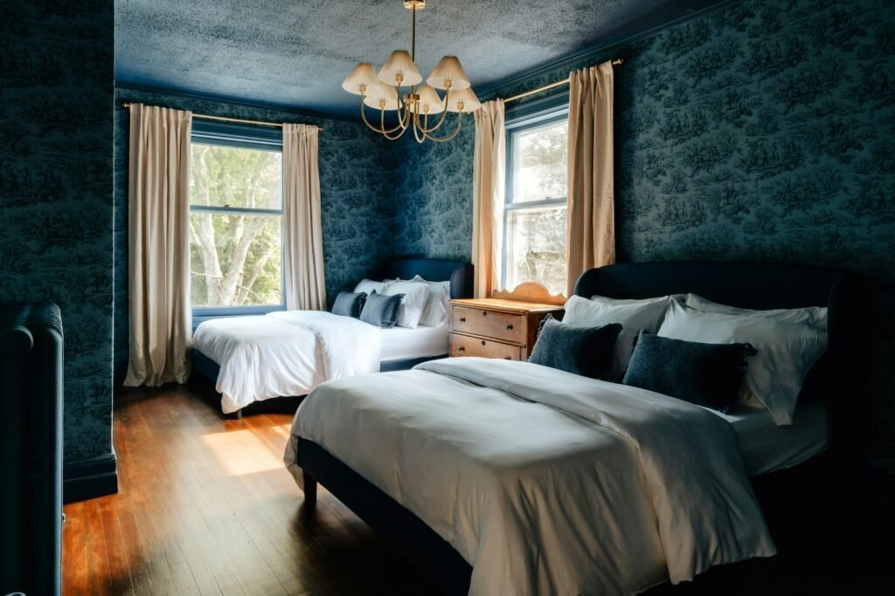
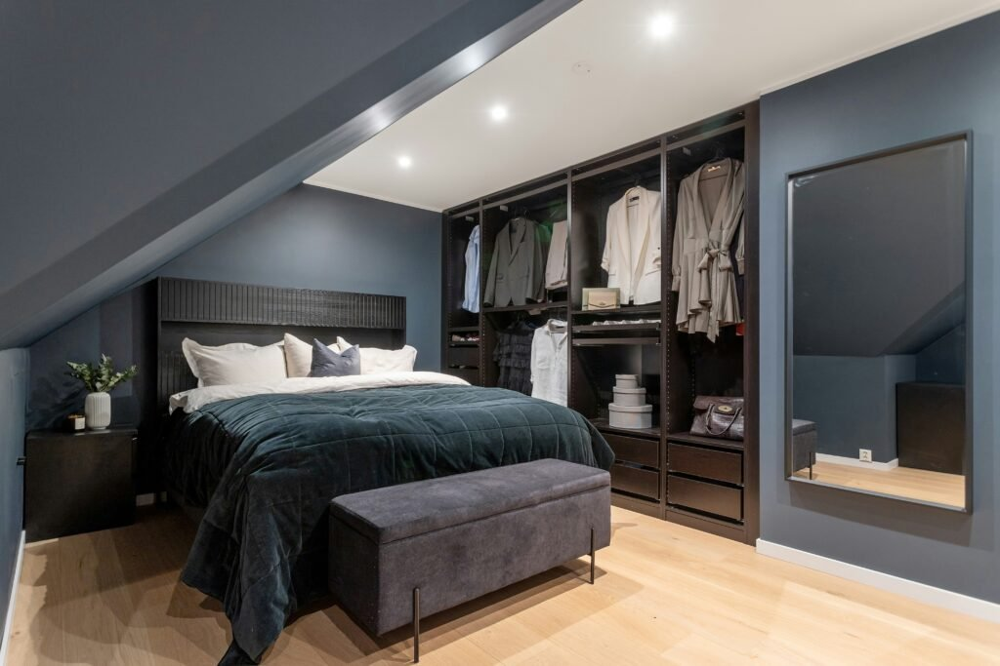
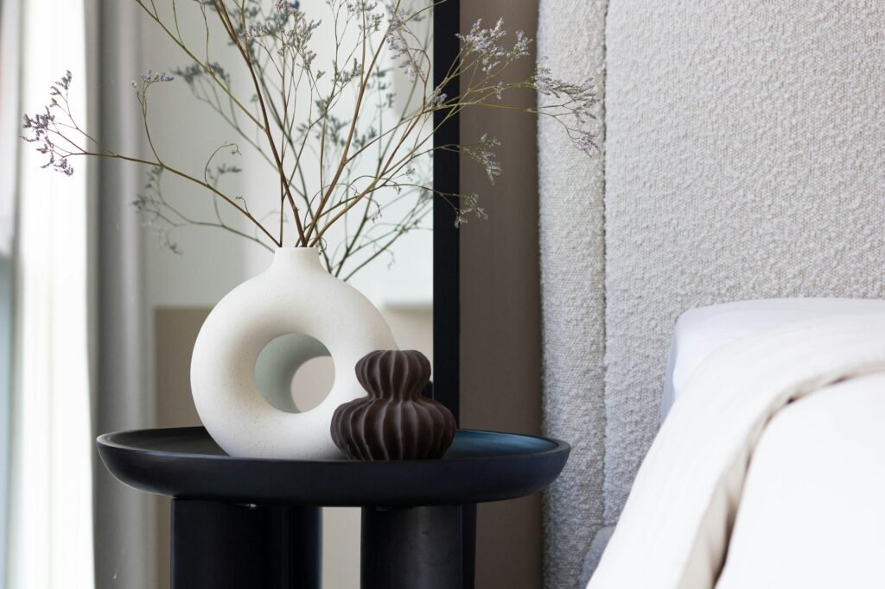
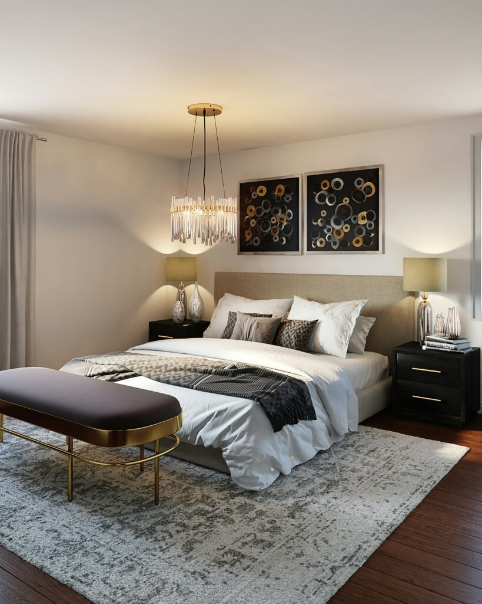
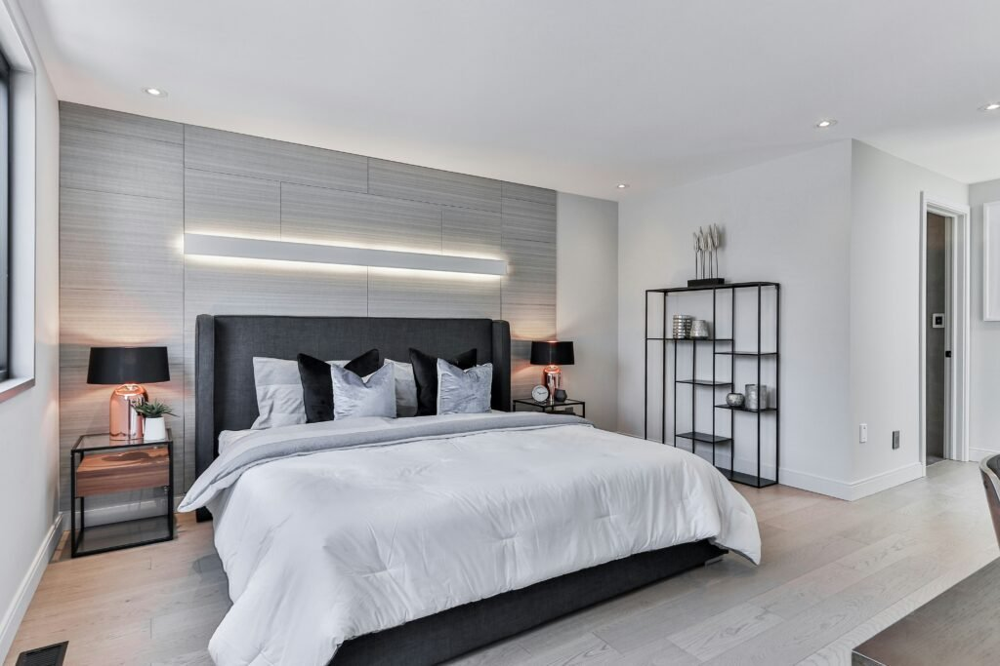
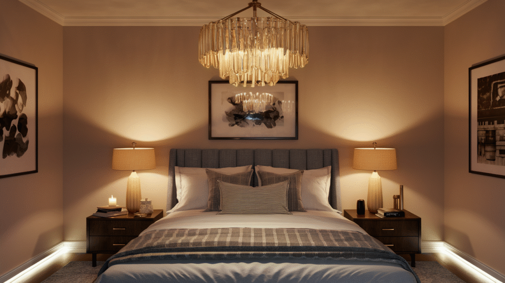
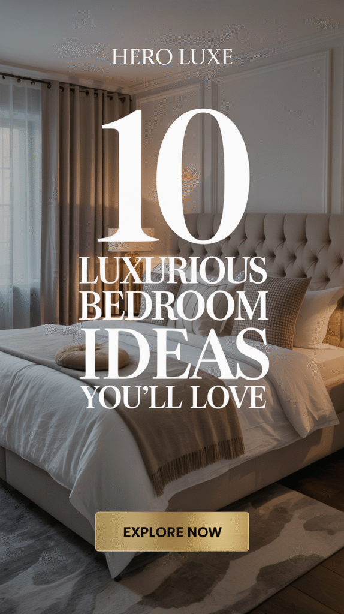

A luxurious bedroom doesn't actually require a luxury budget.
It requires a specific set of decisions made well, color, lighting, textiles, scent, that together create a feeling no single expensive piece can fake on its own.
This goes through those decisions one at a time.

Why Luxury Is About Feel, Not Price
A room can be expensively furnished and still feel cold, or modestly furnished and feel genuinely luxurious, the difference almost always comes down to the decisions covered here, not the total amount actually spent.
Lighting, textiles, and a clutter-free layout do more for the feeling than any single expensive piece ever will.
Mistakes Worth Avoiding
Overcrowding the room with too many statement pieces competing for attention undercuts the effect each one is trying to create.
Skipping lighting layers in favor of a single overhead fixture is one of the most common reasons an otherwise well-furnished room doesn't feel luxurious.
Personalization: Making It Yours
A meaningful piece of art, a sentimental object, or a color tied to personal taste keeps the room from reading as a generic luxury showroom.
The most luxurious rooms still feel specific to the people living in them, not interchangeable with any other high-end bedroom.
Layout: Designing for Flow
Clear pathways and furniture placed with actual movement in mind matter more to a room's luxury feel than most people account for.
A beautifully furnished room that's awkward to move through undercuts the effect of every individual design choice made.
Tech Integration: The Smart Luxury
Smart lighting, blackout shades on a timer, or a simple sound system all add real function without visibly cluttering the room with cords or devices.
The goal is technology that works quietly in the background, not technology as a visible decor element.

Scent: The Invisible Luxury
A quality candle or diffuser in a considered scent adds a sensory layer that's easy to forget when focused purely on what's visible.
This is one of the lowest-cost items on the entire list relative to the effect it has on how the room actually feels to be in.

Ambiance: Creating the Mood
Soft, warm lighting combined with quiet, uncluttered surfaces sets a mood that bright, busy spaces can't replicate.
This is less about any single addition and more about how all the other elements on this list come together in the room at once.

Storage: Keeping Clutter Out of Sight
Clutter undermines a luxurious feel faster than almost anything else in the room, regardless of how expensive the furniture is.
Closed storage, a dresser with real capacity, under-bed storage, a proper closet system, keeps daily life from visibly competing with the room's styling.

Decor Accessories: The Finishing Touches
A few considered objects, a tray, a piece of art, a vase, finish the room without crowding it.
Fewer, more deliberate pieces consistently read as more luxurious than a room full of smaller decorative items.

Textiles: The Layers of Comfort
A duvet, a throw, several pillow types in varying textures, genuine layering is what makes a bed look and feel luxurious, not just a single flat comforter.
Natural fibers, linen, cotton, wool, tend to read as higher quality than synthetic blends, even at a comparable price point.

Furniture: Quality Over Quantity
A few well-made pieces outperform a fully furnished room of lower-quality furniture, both visually and in how long the room actually looks good.
Negative space itself reads as luxurious, a room that isn't trying to fill every available corner feels more intentional.

Lighting: The Actual Secret Weapon
Layered lighting, overhead, bedside, and at least one accent source, does more for a room's luxury feel than any single piece of furniture.
A dimmer switch alone changes the room's entire mood range, from bright and functional to soft and restful, without touching anything else.

The Bed: The True Centerpiece
A substantial headboard, quality linens, and a properly sized bed frame for the room all signal luxury more directly than almost any other single piece.
This is worth the biggest share of the budget on this entire list, everything else in the room gets arranged in relation to it.
The Foundation: Picking the Right Palette
Deep, rich neutrals, charcoal, warm taupe, soft cream, read as considered and expensive in a way bright or trend-driven colors rarely do.
This foundation shapes every other decision in the room, which is why it's worth settling before buying a single piece of furniture.


Your Bedroom, Your Luxury
None of these elements need to happen all at once or in this exact order.
Start with the palette and the bed first, since both anchor everything else in the room, then layer in lighting, textiles, and the smaller finishing touches over time.
A genuinely luxurious bedroom is built from a whole series of considered decisions over time, not one single big purchase made all at once.